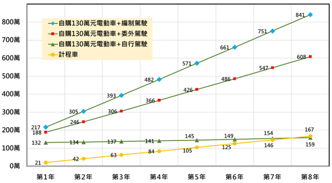

購置車輛
事件案例
- 媒體報導：鄉鎮百萬公務車 ○市收回
- 媒體報導：縣長4年換4公務車 議員批浪費
- 網路剪報：前○局科長吃定廠商 要車開2年A錢23萬元被起訴
- 車輛剪報：把候用校長當司機_○教育局長：六都都這樣
- 車輛剪報：○縣府擬購三百萬元座車_議員砲轟
行政院主計總處相關規定
本府相關規定
主計處115年度臺北市總預算各機關「共同項目費用、購置物品設備」編列基準表
臺北市總預算案綜合決議(114年度)
- 自114年度起市府各機關(基金)購置電動汽車應以聯合採購方式辦理，以撙節公帑並提高服務品質。(財)
本府購租車輛補充規定｜1141224修正總說明及對照表
- 購租補充規定第2點1項：為提增車輛使用效益，加強撙節購車，並落實節能減碳政策，本府各機關公務車輛購置原則如下：
- 市長、副市長、秘書長、副秘書長、各一級機關首長、本市市立大學校長，得配置專用車。
- 小貨車（含代用客車）及各一級機關報經本府核定車輛配置數之特種車、特業車，除屬備妥特殊機具全時待命，專供救災搶險等緊急事件現場作業使用之特種車，得視實際需要依規定程序購置外，其餘車輛（含改裝程度較低，可供一般公務載運人員通用之工程救險特種小客貨兩用車、雙廂式五人座以上工程救險特種小貨車，或警消後勤、指揮、警備、消防查察用特種小客車及小客貨兩用車），均應以使用頻繁，經媒合他機關無適當車輛可供移撥者，始得視實際需要依規定程序購置。
- 小客車及小客貨兩用車，以不再購置為原則。但各二級機關簡任第十一職等（含比照、相當或跨列）以上首長、各區區長既有非電動專用車報廢汰除後，得購置電動公務小客車優先供其公務行程使用；其餘業務性質難以利用大眾運輸工具、計程車、租賃車等外部資源有效替代且使用頻繁，經媒合他機關無適當車輛可供移撥者，如機關就購車、租車及搭乘計程車分別進行年度成本效益分析後，確以購車較經濟者，得依規定程序購置。
- 機車，以不再購置為原則。但使用頻繁，經媒合他機關無適當車輛可供移撥者，得視實際需要依規定程序購置。
- 大客車及其他車種，除有特殊情況報經本府核准外，不得購置或移撥。
-
- 鑑於臺北市政府（以下簡稱本府）專用車電動化期程業經本府113年7月31日府授秘總字第1133008383號函 核定在案，未來各機關購置專用車，依前揭函及本點第2項本府主計處組成之專案小組審查已足，爰刪除第1項第1款前段有關報廢後應專簽市長同意後購置之規定，以簡化程序；後段規定移列第3款並予修正。
- 考量各二級機關簡任第11職等(含比照、相當或跨列）以上首長、各區區長，因機關業務特性，確有隨時由機關趕赴事件地點處理急要公務或地方事務之頻繁需求，爰將現行第1項第1款後段規定移列第2款，並修正放寬該等首長之既有非電動專用車報廢汰除後，得購置電動公務小客車優先供其公務行程使用。
- 購租補充規定第4點：
- 各機關購置專用車、公務及業務小客車、普通重型以下機車，應以電動車為限。購置其他車種優先擇電動車等低污染車款部分，應依行政院主計總處訂頒共同性費用編列基準表之規定，或本府環境保護局報經本府核定另案公布之相關政策辦理。
- 前項所稱電動車，除既有已購置之過渡性插電式油電混合動力車外，均以領得公路監理機關所核發電動車牌照者為限。
- 各機關既有非電動車報廢汰除期程規定如下：
- 專用車及普通重型以下機車：117年年底前。
- 公務小客車：119年年底前。但變更登記為特種車者不在此限。
- 其餘車種：依本府環境保護局報經本府核定另案公布之期程。
- 購租補充規定二II、八I、八II：各機關購置、租賃車輛需求，應依各年度本市總預算編製注意事項規定，將相關概算資料送交主計處組成專案小組進行先期審查。租賃車輛之每月租賃費用上限，應符合本府主計處相關規定，並優先租賃電動車等低污染車款。
- 購租補充規定五：除業務上有特殊需求並專案報經本府核准者外，各機關應於各年度行政院主計總處所定公務車輛編列基準範圍內，依預算書所列車種辦理包含該車輛所需各項配備（含貨物稅）之購置事宜。
1121004府授秘總1123009794號函：本府公務車輛管理常態查核及處理措施
- 凡低度使用者，該車於報廢後以移撥堪用車為限，不得購置新車；不當閒置者，該車應列管媒合至成功為止或限期報廢。
- 機關未向秘書處提出相關車輛媒合需求者，不得逕行提報年度購車。經評估年度使用效益優於計程車、租賃車或共享機車者，方得購置新車，且新車3年內不得閒置或低度使用。
購置小客車、小客貨應進行年度使用成本效益分析
- 購租補充規定 三：各機關依第二點第一項第三款進行購車、租車及搭乘計程車之年度成本效益分析時，購車或租車，得將車輛購租及管理維護、油料能源、外僱專責駕駛人力等成本納入，其中購置車輛年度成本得以購車款加計使用十年之稅費、養護費、保險費等費用後攤提計算；計程車得參據以往用車頻率里程依當地政府公告計程車費率估算。相關成本計算期間未滿一年者，按實際月份比例計算。
- 以購置市價130萬元電動小客車，由同仁自駕，無配置專任駕駛為例。在每年行駛6,000公里情況下，使用8年總成本約159萬元，換算1年19.88萬元改搭計程車，在每趟8公里車資約278.75元推估下，可搭乘713趟計5,704公里，且係由計程車司機駕車，無尋覓車位付費困擾，亦不需承擔事故及違規風險，自以改搭計程車更具效益。
 |
| [購車與計程車成本效益分析] |
113年12月送市議會民委會:本府公務車調度及同仁因公外出交通方式分析說明
- 各機關112年度全年使用之528輛專用車及公(業)務小客車小客貨數據分析
- 全年總計行駛里程、出車日數、次數分別為361萬1,913公里、9萬9,716日、14萬2,538次，平均每車每年約6,841公里、188.9日、270.5次，亦即每次出車（往返）行駛里程約為25公里。
- 全年消耗汽柴油計49萬2,235公升，以每公升油價31元計算，約當支付油料費1,525萬9,285元。
- 全年車輛維養實支數計1,223萬6,230元，約當每車每年2萬3,175元。
- 全年保險費實支數計257萬5,386元，約當每車每年4,878元。
- 總計528輛車之112年油料、維養、保險支出共計3,007萬901元，約當每行駛1公里8.33元。
- 上述車輛以購車款63.5萬元使用10年，每年行駛6,841公里計算，每公里約9.28元，合計每公里8.33+9.28=17.61元。
- 另以透過共同供應契約下訂**月薪制委外駕駛**（最新決標金額4萬6,797元），每年所需費用計56萬1,564元，以每年行駛6,841公里計算，每行駛1公里另增加之人力成本約82.09元。
- 電動汽車電池原廠保固多為8年（或16萬公里，先到者為準），如報廢後換購130萬元電動小客車使用8年，以每年行駛6,000公里計算，每公里成本約27.08元。另電動車每度電3.5元約可行駛4公里，8年平均之維養、保險費比照舊車計算，每公里電費、維養、保險成本共約0.875+4.675=5.55元，合計每公里27.08+5.55=32.63元。
- 計程車費日間率起程1.25公里85元、續程每200公尺5元，遇行車時速5公里以下，累計每60秒加收延滯計時運價5元。設每次搭計程車12.5公里，並在行車過程發生6次延滯，每趟車資約為400元，約當每公里32元。
- 計程車係由專業司機駕車，無尋覓車位付費困擾，可同時彈性多輛出車，亦不需承擔事故及違規風險，但較難於郊區小巷即時叫車。
- 故購置電動汽車由員工自駕，其每年行駛里程應至少高於6,000公里方符基本效益。但業務屬性可適度以大眾運輸、計程車等替代者，仍以改搭大眾運輸、急要時輔以計程車為佳。
受贈車輛或指定購車捐款案報府規定及考量因素
- 購租補充規定 六：各機關不得勻用各界捐款及外募款項等經費支應購車價款。但直接受贈車輛，或以指定專供購車使用之捐款購置車輛者，應報經本府核准後，始得辦理。除依本補充規定辦理外，亦不得於其他計畫或工程、勞務採購契約內，納列提供機關使用之車輛或專責駕駛人力。
- 110年9月22日府授秘總字第1103011288號府函：受贈車簽府會辦規定
- 行政程序完備性：受贈車輛或指定購車使用之捐款，依臺北市市有財產管理作業要點第十點，如屬附有負擔性質，應循行政程序專案簽報本府核定，並加會財政局、主計處、法務局及相關機關。
- 後續經費與環保政策：受贈或購置之車輛，並將衍生後續維護、稅負等經費。如屬燃油車輛，亦將影響本府公務車輛電動化政策期程。
- 車輛規模：合理控制各機關整體車輛規模，避免發生不符使用效益情形。
- 相關單位會審：後續各機關受贈車輛或指定購車之捐款，均須報府核准後始得辦理，並加會環保局、秘書處、財政局、主計處及相關機關。
購租補充規定有關租賃車輛部分
- 七I：各機關租賃車輛，應按下列優先順序處理：
- 利用大眾運輸工具自行往返。
- 運用現有之公務車輛，以集中調派等方式加強支援各項公務所需，不另增租車輛。
- 利用計程車短程洽公並覈實報支短程車資，或視實際需求租賃車輛。如計程車資或租賃費用依車齡或車型等級而異者，應以平價實用車款為主，除禮賓及因應臨時或特殊需要之用車外，不得指定車齡少於三年之新車、奢華車款或性能級距超出公務需求必要範圍，而致增加支出費用。
- 七II：租賃車輛，應以即用即還或短期租賃為限，不得全時租賃，或以短期租賃型態變相供長期使用；非即用即還之租賃車輛，不得專供專用車用途或供特定人員使用。
公務機車改用共享機車相關原則
- 111年10月21日府授秘總字第11130103261號府函
個人墊付租賃共享機車費用核銷方式：
- 考量以個人手機App即時預約鄰近之共享機車自駕使用，可避免機關購置自有運具卻無法高度使用，形成資源浪費，爰各機關可自駕公務機車之因公外出人員，遇有公務機車不敷使用時，得依規定善加利用共享運具經營業者提供之共享機車。
- 依本府環保政策，各機關之燃油機車除警用機車及報經本府核准者外，應於112年底前全數停駛退場。配合本府公務機車改用共享機車政策，前述相關車輛退場後，除112年度已編列預算汰換為電動機車者外，依其以往用車紀錄已符閒置或低度使用認定標準且經檢討無法改善者，應逕予報廢汰除並改用共享機車，其餘則由機關依用車紀錄估算購置電動機車或租賃共享機車之年度成本效益，確以購車較經濟者，方得循113年度概（預）算程序購置電動機車。但同屬低度使用之機車，得併計其行駛里程及出車日數後，就確有機會改善低度使用問題之車輛數額部分，經評估年度成本效益後循113年度概（預）算程序購置電動機車。
- 111年10月21日府授秘總字第11130103262號府函
各機關人員以個人帳號租賃共享機車公務使用所墊付相關費用之核銷方式：
- 目前經本府交通局依臺北市共享運具經營業管理自治條例第6條許可之本市共享機車經營業者計有Goshare、iRent、Wemo等3家，計費方式除均有以分計費之一般方案外，另有Wemo之小時租／月租方案、iRent之訂閱制方案，以及可加購車損險、自助換電享回饋……等多元計費與優惠方案，各機關應指派專人了解各家業者相關計費優惠方式、App操作流程、服務範圍等特性，以供出勤人員選擇參考。
- 為簡化經費報支程序，各機關因公租賃共享機車人員得依下列方式於本府電子請購核銷系統逕填「付款申請單」辦理核銷：
- 請購依據：以WebITR差勤系統奉核之當日出差或公出申請單為憑，免事先公文簽准。
- 經費用途說明：統一填列「因公租賃共享機車（業者英文品牌簡稱）」文字，並逕依App訂單明細填報借還起迄時間、車號及騎乘距離，免檢附App相關截圖。
- 檢附憑證：應為業者開立含機關統一編號之當日電子發票，無須檢附紙本電子發票證明聯。如因故改開發票致日期不一致，應敘明原因。
- 申請支付或歸墊之款項：以發票所載總金額為上限（含加購車損險費）。
- 配套措施：
- 依行政院頒布政府支出憑證處理要點第3點規定，機關員工申請支付款項，應本誠信原則對所提出之支出憑證之支付事實真實性負責，不實者應負相關責任。機關並得依所累積之租車核銷大數據資料進行例外管理。
- 機關人員於上班所在地點出勤當下，如所在地點仍有公務機車尚未排定出車使用，不得租賃共享機車。
- 機關因公租賃共享機車人員應具備合格駕照，事先完成業者App個人付款設定等帳號開通作業，並設妥機關統一編號，租賃期間應全程自行駕車，不得交由他人代駕。除特殊情形外，原則應於租車事畢後15個工作日內提出核銷申請。
- 所核銷共享機車之租賃時間、租還地點，應與相關人員上班所在地或奉派出勤地點有關，除有本府公務車輛使用管理要點第6點所規定除外情形外，租賃共享機車供機關人員上下班搭乘（含自駕）使用之費用不得核銷。
- 隨車共乘共享機車之人員，不得重複報支租車費用或交通費。
- 機關人員選擇使用內含當期30日內免費騎乘時數之Wemo月租制或iRent訂閱制方案者，如當事人於期滿後欲全額報支歸墊當期基本資費，應檢附含機關統一編號之該期金額電子發票，且其當期因公租賃共享機車之累計時數，應全數優先納入當期免費騎乘時數計算，不得重複報支費用。如當期因公租車累計時數低於當期免費時數，僅得於不重複報支原則下，選擇按比例報支歸墊當期部分基本資費，或單獨就每趟因公租車之實支費用進行報支。
- 本案所需經費，請各單位預算機關先由其年度相關經費項下調整支應，如有不敷，再另籌財源支應；其餘附屬單位預算部分，亦請各基金先由其年度相關經費項下調整支應，如有不敷，再依臺北市各基金附屬單位預算執行要點相關規定以併入決算方式辦理。
本府車管要點第5點2項：自駕自有或共享車得報支交通費
- 遇機關現有車輛不敷調派使用，或經大眾運輸到達當地停靠站點後有前項各款情形者，得視必要情形報支短程計程車資或租賃車輛；如以自用或自行租賃（含共享）之汽車、機車自駕往返，並得依國內出差旅費報支要點規定報支機關所在地及出差地為起訖點，按必要路程計算之交通費。
- 配合行政院修正國內出差旅費報支要點第5點，放寬駕駛自用或自行租賃（含共享）汽車、機車出差者，其交通費依必要路程之公里數各以每公里新臺幣3元、新臺幣2元報支交通費，為符實務運作需求，爰修正第2項增列相關規定。